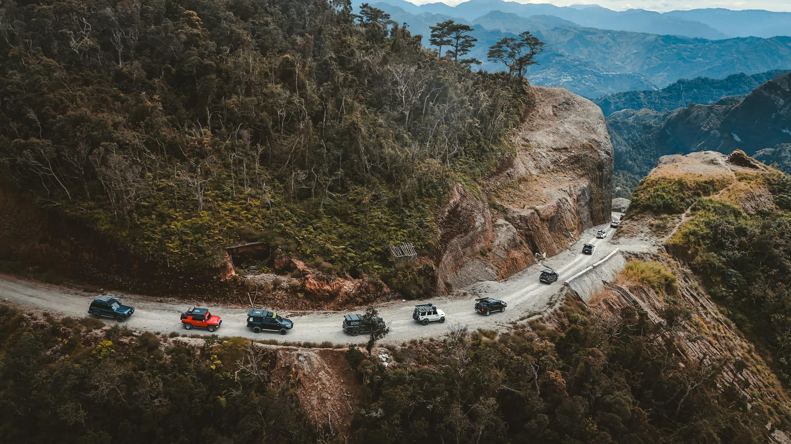
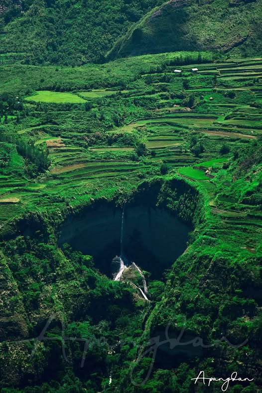
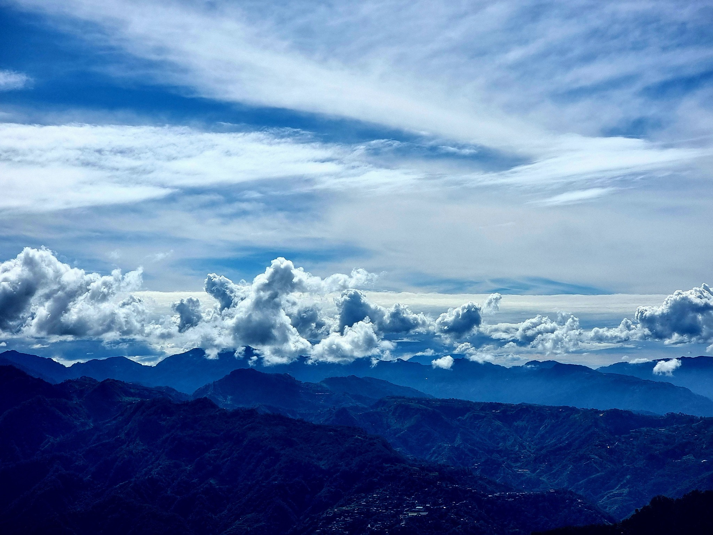
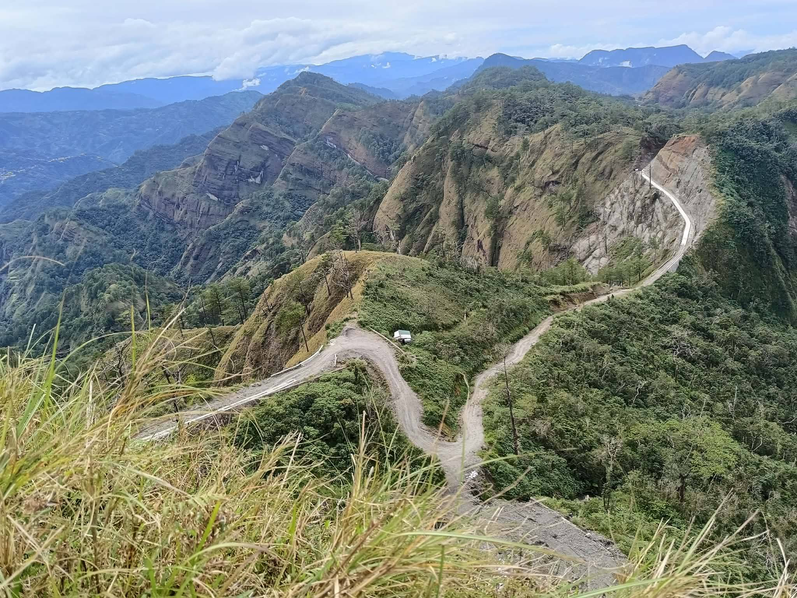
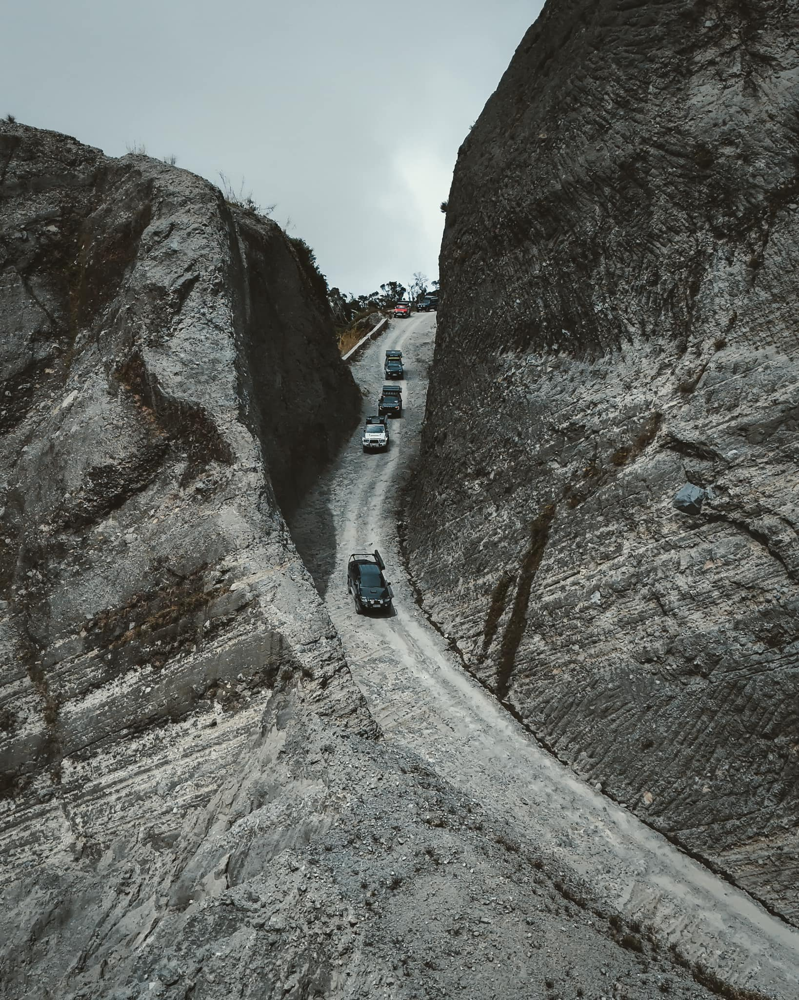

Tacadang isn’t just sightseeing—it’s experiencing a serene mountain world, where the clouds, peaks, and night sky make you feel small yet alive. It’s the kind of place that stays in your memory long after you leave.
Tacadang is a remote mountainous barangay in Kibungan, Benguet, known for its breathtaking scenery including the “Crying Mountain” and rice terraces. Often called a hidden gem, it features steep off-road journeys and is popular for trekking, hiking, and 4x4 adventures.
Wake up before dawn and witness clouds covering the valleys below.
Spend a peaceful night under the stars with cool mountain breeze.
Explore panoramic views of the Cordillera mountains.





Best Season: November–April for clear skies.
Transportation: 4x4 vehicles recommended.
Gear: Hiking shoes, flashlight, water, snacks.
Camping: Bring sleeping bags and warm layers.
Guides: Hire a local guide for navigation.
Respect: Leave no litter.
"Absolutely stunning sunrise! A must-visit place."
- Gary D. Ronquillo